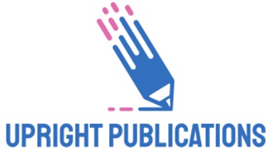

Upright PublicationsUpright Publications maintains editorial independence in all publishing decisions. Editorial evaluations are conducted solely on academic merit, originality, relevance, and clarity without discrimination based on nationality, institutional affiliation, gender, religion, or political beliefs.
All submitted manuscripts undergo an appropriate peer review process conducted by qualified experts. Reviewers are selected based on their subject expertise and are expected to provide constructive, objective, and confidential evaluations.
The Editor-in-Chief and the Editorial Board are responsible for making publication decisions after considering reviewers' comments, ethical standards, and the overall quality of the manuscript.
Editors, reviewers, and authors are expected to disclose any potential conflicts of interest that may influence the editorial or publication process.
Where necessary, corrections, expressions of concern, or retractions will be issued to maintain the integrity and reliability of the published record.